01It graduated!
When we introduced m1 at the start of October, we called it a preview and meant it: it was still at school, learning to draw. It has been training for around a month since then, and today it's done. No more “preview” tag, no more “still learning”: m1 is released.
Nothing changes about how you use it. Same Studio, same API, same prompts in plain words. The sprites just come out better: cleaner shapes, more detail, colours that hold together, and a lot more of them come out right the first time.
A month of homework, and it finally got its cap and gown.
02The report card
Here's a handful of m1's work since graduating. None of these prompts were in its lessons; each one got two tries, side by side, so you can see how much a seed changes. We didn't hide the one it got a bit wrong.
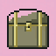
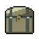
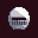
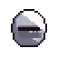
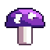
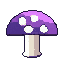
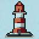
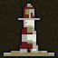
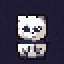
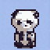
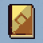
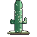
What it's great at now: objects and items (chests, potions, books, gear), critters, buildings and plants, and keeping a sprite readable on any background. It's game-ready: drop one straight into a level.
What it still trips on: very specific combinations (a cactus wearing a hat sometimes loses the hat), small details in busy prompts, and anything that needs written words on it. When that happens, change the seed or say the important part first.
03What's different for you
- The preview tags are gone from the Studio, the front page and the plans.
- Better sprites, same allowance: 15 a day on Free, 250 on Artisan, 500 on Atelier.
- Same seeds, new drawings: a prompt and seed you saved during the preview may draw a little differently now. That's m1 being better at its job, not a bug.
- Faster when you want it: Artisan and Atelier can switch on Express for a few super-quick goes a day.
04What's next
m1 has a little sibling that also graduated today: v1 is out of school too. And the next class has already started. We're working on m2, with a lot more variety in what it can draw, and on v2, which will animate game sprites: walks, jumps, attacks, the works.
Thank you to everyone who made sprites during the preview. Every thumbs up and thumbs down you give in the Studio now helps the next model learn what “good” looks like.